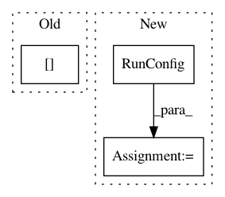

9c8d5e5eae1cc05279ea32eeeb2d257e60ccedc7,census/estimator/trainer/task.py,,,#,61
Before Change
train_steps=args.train_steps,
eval_steps=args.eval_steps,
export_strategies=[saved_model_export_utils.make_export_strategy(
model.SERVING_FUNCTIONS[args.export_format],
exports_to_keep=1,
default_output_alternative_key=None,
)]
After Change
name="census-eval"
)
run_config = tf.estimator.RunConfig()
run_config.replace(model_dir=args.job_dir)
estimator = model.build_estimator(
embedding_size=hparams.embedding_size,
// Construct layers sizes with exponetial decay
In pattern: SUPERPATTERN
Frequency: 3
Non-data size: 3
Instances
Project Name: GoogleCloudPlatform/cloudml-samples
Commit Name: 9c8d5e5eae1cc05279ea32eeeb2d257e60ccedc7
Time: 2017-11-10
Author: puneith@google.com
File Name: census/estimator/trainer/task.py
Class Name:
Method Name:
Project Name: Qiskit/qiskit-aqua
Commit Name: 8df39509bef185661558ad98bc76a3abd6539bb5
Time: 2019-01-22
Author: chenrich@us.ibm.com
File Name: qiskit_aqua/_aqua.py
Class Name:
Method Name: run_algorithm
Project Name: hanxiao/bert-as-service
Commit Name: dd3c13d51975d7ca569681dd19639473d19e8e85
Time: 2018-12-14
Author: hanhxiao@tencent.com
File Name: server/bert_serving/server/__init__.py
Class Name: BertWorker
Method Name: run1